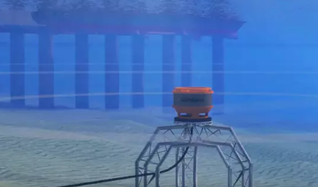
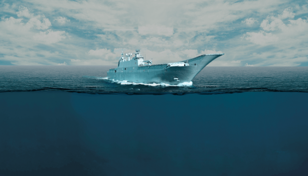
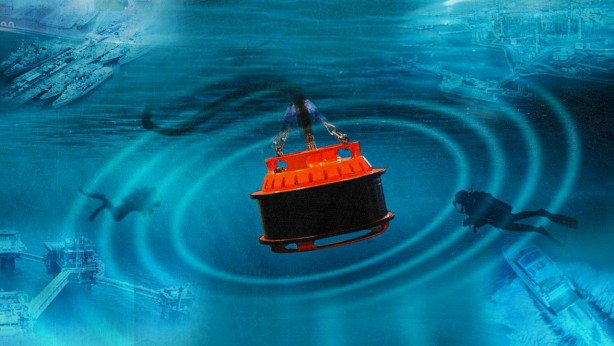
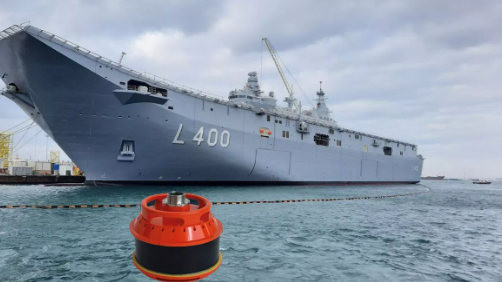
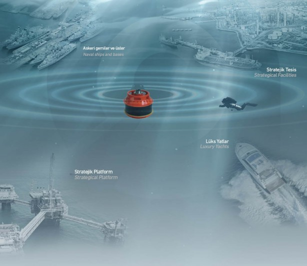
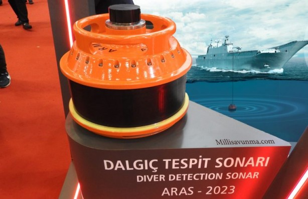

Yerli ve milli savunma sanayisinde yüzde 80 yerlilik oranını yakalayan Türkiye, denizlerdeki dalgıç terörist tehdidine karşı yeni bir çözüm üretti. Türkiye bu gelişme ile dünyada sayılı ülkeler arasına girdi. su altından gelen kapalı/açık devre solunum sistemli dalgıçları ve dalgıç intikal vasıtalarını tespit edebilen ve ARMELSAN tarafından geliştirilen Aras-2023 Dalgıç Tespit Sonarı, Milli Savunma Bakanlığı'nın ihtiyaçları doğrultusunda Savunma Sanayii Başkanlığı koordinesinde yürütüldü.

Kimi kritik teknolojilerin daha ulaşılabilir olması onların yaygınlaşmasını da beraberinde getirdi. Bu gerçeklik harp sahasının sadece bugününe değil yakın geleceğine de şimdiden damga vurdu. Milyonlarca dolar değerinde tankın 100 dolardan ucuz bir drondan atılan mühimmatla, bir donanmanın en kritik gemilerinin son derece basit insansız kamikaze platformlarla denklem dışına çıkarılması akla ilk gelen örnekler.

Yalnızca bunlar da değil. Her ne kadar tehdit unsuru özellikle askeri açıdan ele alınsa da aslında son yıllarda yaşanan kimi olaylar sivil ancak son derece stratejik hedeflerin de terör unsurları tarafından kolayca hedef alınabileceğini ortaya koydu. Bu noktada akla gelen ilk örneklerden biri dünyanın en önemli enerji şirketlerinden biri olan Suudi Aramco'ya yapılan saldırılardı. Dronlarla yapılan saldırı Suudi Arabistan'ı petrol üretiminde günde yaklaşık 5,7 milyon varil kayba uğratmış, petrol fiyatlarını ise yüzde 20 artırmıştı.

Her ne kadar ağırlıklı olarak bu sıralar dronlar, kamikaze insansız hava araçları ya da kamikaze insansız deniz araçları öne çıksa da arka planda kesinlikle üzerine düşünülmesi gereken unsurlardan biri de dalgıç teröristler. Suyun altındaki tehlikeleri tespit edebilmek başlı başına zorlu bir süreç.
Bir de buna çok kısıtlı bir zaman içerisinde 'müdahale edebilme' mecburiyeti de eklendiğinde iş daha da karmaşık bir hale geliyor. Bugün ABD gibi donanma açısından dünyanın bir numarası olarak kabul edilen ülkenin dahi Basra Körfezi başta olmak üzere kimi alanlarda ne tür zorluklar yaşadığı biliniyor. Buna son dönemlerde Rusya'nın Karadeniz'de en güvenli olduğunu düşündüğü limanlarda uğradığı saldırıları ya da Avrupa için hayati önemdeki doğal gaz boru hatlarına yapılan sabotajları eklediğinizde fotoğraf daha da netleşiyor.
Dalgıç eğitimi verdiğiniz bir terörist, oldukça basit bir patlayıcı ile sizin en önemli savaş geminizi oyun dışı bırakabileceği gibi limanlarda yer alan stratejik noktalarınızı da hedef alabilir. Bu noktada, Türkiye gibi üç tarafı denizlerle çevrili olan, nükleer santral projesinde sona gelen, Karadeniz kıyısında çok büyük bir doğal gaz depolama merkezi kuran, ülkenin dört bir yanında çok büyük barajları olan bir ülke için dalgıç tespit sonarları haliyle büyük anlamlar taşıyor.
Dünyada dalgıç terörü tehdide karşı çalışmalar elbette var. Ancak böyle bir sistemi yapabilen ülke sayısı bir elin parmaklarını geçmiyor. Türkiye de dünyada bu teknolojiye sahip sayılı ülkeden biri. Milli Savunma Bakanlığı'nın ihtiyaçları doğrultusunda Savunma Sanayii Başkanlığı koordinesinde ARMELSAN tarafından geliştirilen Aras-2023 Dalgıç Tespit Sonarı, su altından gelen kapalı/açık devre solunum sistemli dalgıçları ve dalgıç intikal vasıtalarını tespit edebiliyor.

Aras-2023 tehditleri 1 kilometre mesafeden otomatik olarak algılıyor. Bir dalgıcın hızı göz önüne alındığında bu sistem kullanıcıya yaklaşık yarım saatlik bir müdahale süresi kazandırmış oluyor. Yerli/milli imkanlarla üretilen Aras-2023 dalgıç tespit sonarı Türk Donanması'nın gözbebeği TCG Anadolu'nun üzerinde de yer alıyor. Bu sistemin ayrıca MİLGEM İstif (İ) Sınıfı Fırkateyn Projesi kapsamında üretilecek olan 6, 7 ve 8'inci gemilerde kullanılacağı da biliniyor.
Türkiye, aslında Aras-2023 ile çok değerli bir yolculuğun ilk ve belki de en kritik adımlarından birini de atmış oluyor. Çünkü ARMELSAN milli imkanlarla bir 'sonar ailesi' ortaya koyuyor ve Aras-2023 ilk ürün olarak dikkat çekiyor. Bu durum, gelecek dönemlerde farklı tiplerde, farklı görevler üstlenebilecek sonarların da üretileceği anlamına geliyor.
Tüm bunları alt alta koyduğumuzda Türkiye, iki kritik konuda kendi çözümünü üretmiş oluyor. Bunlardan ilki 'vekalet savaşları' meselesi. Tam da burada, kendi izlerinin görülmesini istemeyen kimi ülkelerin 'vekillerine' daha fazla yetenek kazandırmaya başladığını hatırlamak gerekiyor. Ayrıca, kimi istihbarat raporlarında ABD'nin Suriye'nin kuzeyindeki teröristlere dalgıç eğitimi verdiğine dair yapılan haberleri anımsadığımızda Türkiye için bu sorunun ne denli öncelikli olduğu daha da netleşiyor.

Diğer nokta ise sürekli karşılaşılan doğrudan ya da örtülü ambargolar... Türkiye'nin en çok ihtiyacı olduğu anda dahi müttefiklerinden kritik sistemleri alamadığına defalarca şahit olduk. Dünyada çok az ülkenin üretebildiği dalgıç tespit sonarı için de benzer bir senaryo mümkün. Ankara, Aras-2023 hamlesiyle hem gelecek dönemlerdeki muhtemel ambargoların da önüne geçiyor hem ihracat potansiyeli çok yüksek bir ürün geliştirmiş oluyor hem de 'suyun altındaki gözlerini' giderek artıracağı ve gerekli tedbirleri alacağını ilan ediyor.